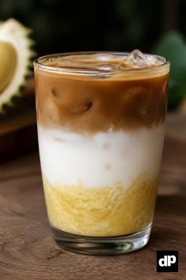
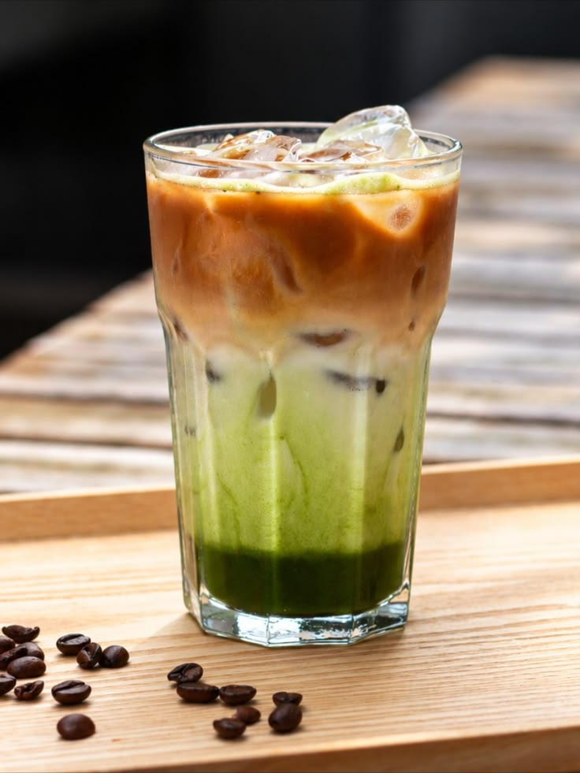

Media Usaha
Galeri Kopi Nusa
Dokumentasi singkat sajian terbaru Kopi Nusa, lengkap dengan ukuran dan harganya.
Media Usaha



Sapaan Sambutan Resmi Kopi Nusa
Rekaman ini adalah sapaan sambutan resmi untuk pengunjung Kopi Nusa. Isinya mencakup ucapan selamat datang, informasi jam buka kedai pukul 09.00-22.00 WIB, dan ajakan menikmati kopi Nusantara. Ringkasan teks ini disediakan agar informasi tetap dapat dipahami tanpa harus memutar audio. Audio hanya berbunyi setelah Anda menekan tombol putar.